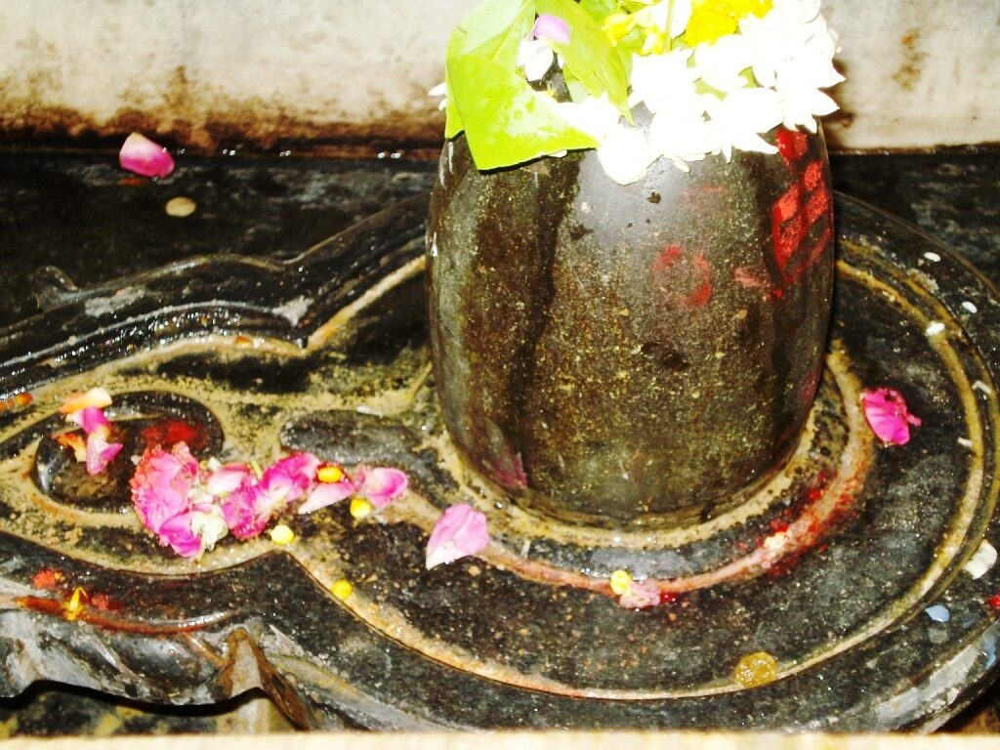

<?xml version="1.0" encoding="UTF-8"?><rss version="2.0"
	xmlns:content="http://purl.org/rss/1.0/modules/content/"
	xmlns:wfw="http://wellformedweb.org/CommentAPI/"
	xmlns:dc="http://purl.org/dc/elements/1.1/"
	xmlns:atom="http://www.w3.org/2005/Atom"
	xmlns:sy="http://purl.org/rss/1.0/modules/syndication/"
	xmlns:slash="http://purl.org/rss/1.0/modules/slash/"
	>

<channel>
	<title>Sookshmeshwar &#8211; Varanasi Temples</title>
	<atom:link href="index.html" rel="self" type="application/rss+xml" />
	<link>../../../../../index.html</link>
	<description>Temples of Varanasi as referred to in Kashi Khand</description>
	<lastBuildDate>Thu, 19 Jun 2025 05:16:46 +0000</lastBuildDate>
	<language>en-US</language>
	<sy:updatePeriod>hourly</sy:updatePeriod>
	<sy:updateFrequency>1</sy:updateFrequency>
	<generator>https://wordpress.org/?v=4.6.29</generator>
	<item>
		<title>SOOKSHMESHWAR</title>
		<link>../../../../../shiva-temples/sookshmeshwar/index.html</link>
		<pubDate>Tue, 11 May 2010 07:20:35 +0000</pubDate>
		<dc:creator><![CDATA[admin]]></dc:creator>
				<category><![CDATA[Other Shiva Temples (S-Y)]]></category>
		<category><![CDATA[Shiva Temples]]></category>
		<category><![CDATA[Sookshmeshwar]]></category>
		<category><![CDATA[dhoomaavati]]></category>
		<category><![CDATA[dhoomavati]]></category>
		<category><![CDATA[dhoomavati devi]]></category>
		<category><![CDATA[dhoomavti temple]]></category>
		<category><![CDATA[dhumavati]]></category>
		<category><![CDATA[wish]]></category>

		<guid isPermaLink="false">../../../../../p=494.html</guid>
		<description><![CDATA[According to Kashi Khand, Chapter 69, the place where Lord Shiva wore the skin of Gajasur after slaying the latter, was called Rudra Vasam. (Kindly refer to Krithi Vaseshwar). Once the Lord, in his form as Krithi Vaseshwar, was sitting alongwith Goddess Uma Devi when Nandi offered his prayers and stated that there are  68 [&#8230;]]]></description>
				<content:encoded><![CDATA[<p>According to Kashi Khand, Chapter 69, the place where Lord Shiva wore the skin of Gajasur after slaying the latter, was called Rudra Vasam. (Kindly refer to Krithi Vaseshwar).</p>
<p>Once the Lord, in his form as Krithi Vaseshwar, was sitting alongwith Goddess Uma Devi when Nandi offered his prayers and stated that there are  68 places of worship dedicated to Lord Shiva in this holy place.  Various idols/Shiv Lings have been brought from several other places by Nandi and installed in Kashi.</p>
<p></p>
<p style="text-align: center;"><strong>(SOOKSHMESHWAR)</strong></p>
<p>From Aamrathakeswara Kshetra  one Ling by name of Sookshmeshwar has appeared in the Holy city of Kashi, which is in the vicinity of Vikata Danta Vinayak.</p>
<p>Devotees who worship this ling will have their wishes fulfilled.  They will develop a sharp brain to enable them to solve any sort of problem.</p>
<p><strong><span style="text-decoration: underline;">LOCATION OF SOOKSHMESHWAR</span></strong></p>
<p>Sookshmeshwar is located at Dhoop Chandi locality in Dhoomavati Devi temple.  The Ling is located adjacent to Vikata Dwaja Vinayak which is at the back side of Dhoomavati Devi.</p>
<h3>TYPES OF POOJA</h3>
<p><strong> </strong></p>
<p>The place of worship is open from 06.00 a.m. to 01.30 p.m. and from 05.00 p.m. to 11.00 p.m.  Aarties are performed in the morning and evening.</p>
<h3></h3>
]]></content:encoded>
			</item>
	</channel>
</rss>
